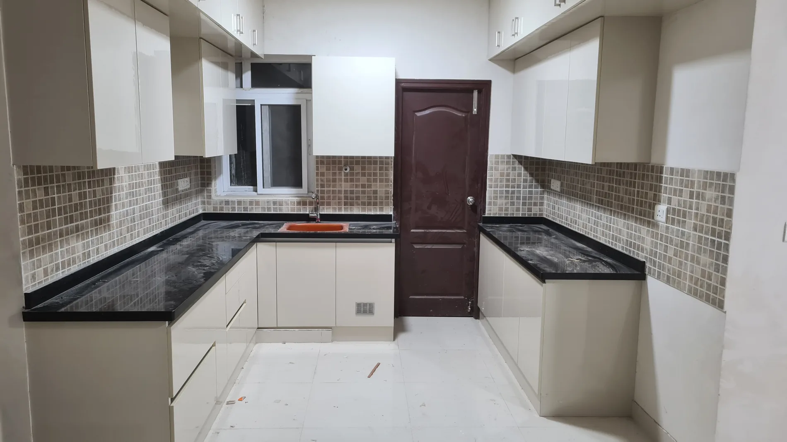
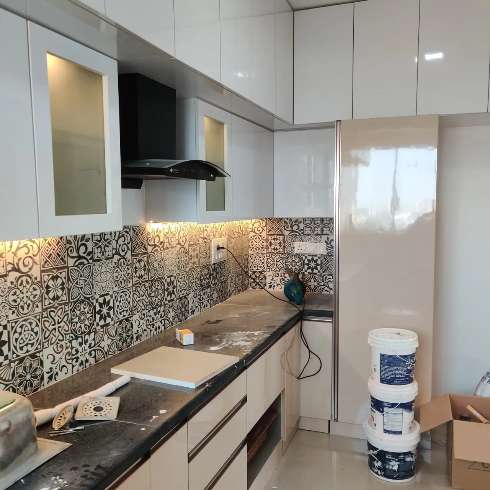
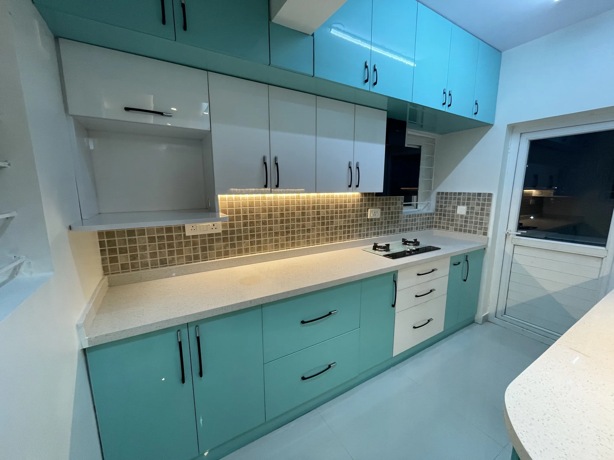

Modular Kitchen
a kitchen that works as beautifully as it looks.
Plan a kitchen around your cooking habits, available space and storage needs. Explore practical layouts, coordinated cabinets, countertop choices and lighting that make everyday routines easier.
Discuss this service ↗Ideas from our workMade to fit
Made to fit
your space.
Explore photographs from the business image collection. Final materials, layouts and finishes can be discussed to suit your requirements.






Start with a conversationLet's shape your
Let's shape your
modular kitchen.
Tell us about your space and what you'd like to improve. We'll get back to you to discuss the possibilities.
Get in touch ↗